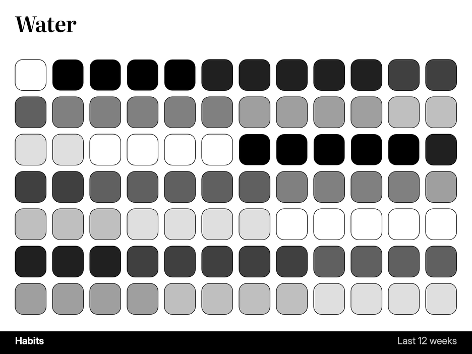
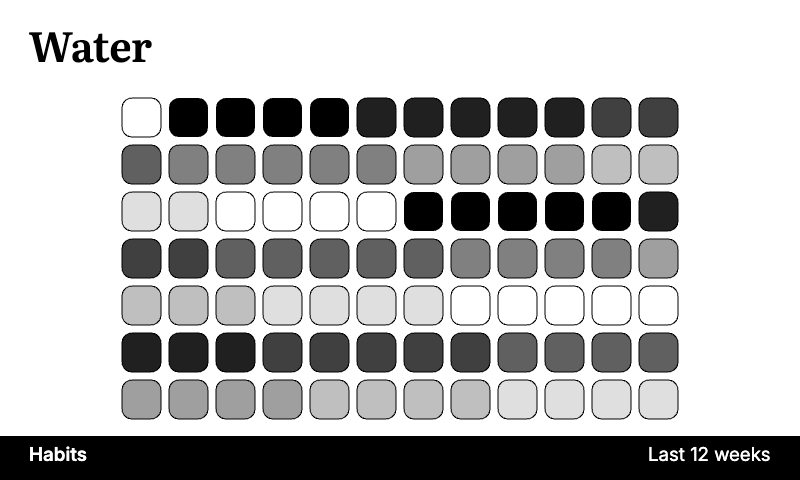

Declaration
function Heatmap(cells: string, rows: i32, cols: i32, levels: i32 = 1): View
Use it for activity over time, like a habit or contributions graph: a column per week and a row per day. In a Layout(_:) it fills the space left, like a Reader(_:_:): the cells are as large as the box allows, square, and the grid is centred.
Parameters
cells- One digit per cell, column by column, top to bottom, from
0(empty) tolevels(full). Missing cells are empty. rows- Cells in a column, 1 to 31 (7 for days of a week).
cols- Columns, 1 to 60 (26 for half a year of weeks).
levels- What a full cell means, 1 to 9: with 1 a cell is done or not; with 8 (glasses of water), a cell at 5 is a grey five eighths of the way to black.
// Name: Water import { App, View, Layout, Title, Heatmap, TitleBar, register } from "./trmnl-ui"; export { trmnl_event } from "./trmnl-ui"; const WEEKS = 12, GOAL = 8; class Water extends App { body(): View { // Column by column (one per week), Monday at the top: glasses that day, 0 to 8. A real app keeps this in KV. let cells = ""; for (let d = 0; d < 7 * WEEKS; d++) cells += String.fromCharCode(48 + (d * 5 + d / 9) % (GOAL + 1)); return Layout([ Title("Water"), Heatmap(cells, 7, WEEKS, GOAL), // fills the space between the title and the bar TitleBar("Habits", "Last 12 weeks"), ]); } } register(new Water());


Twelve weeks of water, eight glasses a day, Monday at the top.
The greys are dot patterns, so they work on both devices in 1-bit. On a press only the band of rows that changed is refreshed: a new check-in today redraws today's cell, not the whole grid (see Screen updates and refresh).
See Also
ProgressBar(_:_:)How far along something is.
Value(_:_:)A big number or short value with a label, like the TRMNL framework's value.
StateAn integer that survives every wake.
preview()Mock data for the Developer tab, like a SwiftUI preview.
When the e-paper does a full refresh and when a fast partial one.